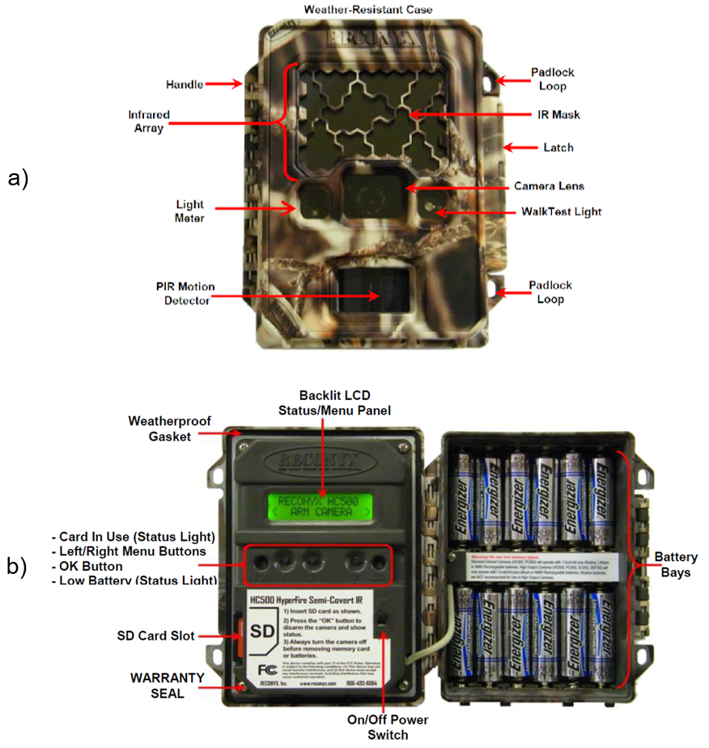
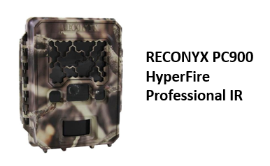
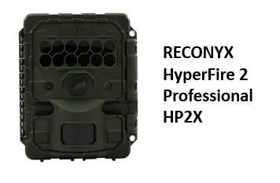
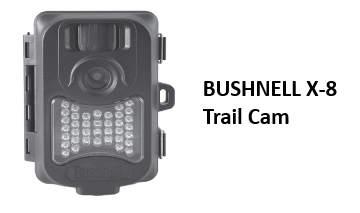

Camera equipment#
Hint
See also
Camera hardware options
Remote cameras consist of a digital camera with a lens, external flash, and a passive infrared and/or motion detector (among other features; Figure 4).

Figure 4. Examples of the a) external components and b) internal controls and components of a remote camera (Reconyx PC900; Reconyx Inc., 2017)
The camera “make” is the manufacturer of a particular camera (e.g., Reconyx), and the “model” is the model number of a particular camera (e.g., PC900). There are many different options and features to choose from when deciding upon the best Camera Make and Camera Model for a particular study, which differ in their impacts on detection probability. For this reason, deploying multiple Camera Models within a study is not advisable (Palencia et al., 2022; Wellington et al., 2014).
It is common for new camera users to confuse the specifications of a particular Camera Make and Camera Model with the camera’s settings. Specifications refer to the camera’s features (characteristics), while settings are options that the user can change. When choosing a Camera Make and Camera Model, important specifications include trigger speed, recovery time, detection zone (i.e., the area [conical in shape] in which a remote camera can detect the heat signature and motion of an object Rovero & Zimmermann, 2016; see Figure 5), battery life and flash type. The best choice of Camera Model will depend on the Survey Objectives, modelling approach, Target Species, and physical environment.
Here are a few examples of specifications to achieve certain Survey Objectives:
To estimate density with the random encounter models (REM; density) approach – use a camera with a fast trigger speed, a wide detection zone, no-glow infrared (IR) flash, and the ability to take bursts of photos (Rovero et al., 2013).
To estimate density or abundance with mark-recapture methods – use a camera with a white flash, a short recovery time, and a fast trigger speed (Rovero et al., 2013). Note that white flashes may scare some animals and potentially reduce the number of recaptures (Séquin et al., 2003; Wegge et al., 2004).
Occupancy studies need a fast trigger speed (Trigger Sensitivity - high) (although the importance of which is species-dependent; Rovero et al., 2013).
Faunal detections generally require a fast trigger speed (Trigger Sensitivity - high) and a wide detection zone.
Note
Most modelling approaches require a fast trigger speed (however, the use of bait or lure may compensate for slower trigger speeds in some cases).
Given the numerous Camera Models available and the frequent release of new models, it would be difficult to recommend a make and model to fit all users’ needs. However, there are many studies and reviews that compare the specifications and the utility of different Camera Models (e.g., see https://www.trailcampro.com/collections/trail-camera-reviews; https://www.mammalweb.org/images/schools/Camera-trap-buying-guide.pdf; Fisher & Burton, 2012; Rovero et al., 2014; Rovero & Zimmermann, 2016; Seccombe, 2017; Wearn & Glover-Kapfer, 2017).

Figure 5. The ability to detect an animal will vary according to the camera specifications (and settings). Important specifications include the camera’s detection zone (here termed “trigger area”), Field of View (FOV; “viewable area’), and”registration area” (the area in which an animal entering has at least some probability of being captured on the image) (Moeller et al., 2023).
7.1.1 Battery type
Most remote cameras require AA batteries. It is recommended to use lithium batteries, as opposed to alkaline or nickel metal hydride, because they are less affected by cold temperatures. Battery life will be affected not only by the type of batteries but also by the camera settings, temperature, and number of images or videos taken (which are dependent on the camera settings, placement, and level of activity in front of the camera) (Wearn & Glover-Kapfer, 2017). However, some camera user manuals contain information on battery performance and the total number of images a camera can be expected to collect before the batteries die (based on the operating temperature and battery type, e.g., Reconyx HyperFire Instruction Manual [Reconyx Inc., 2017]).
7.1.2 SD cards
It is important to consider the size, type, and class of SD (Secure Digital) card since the available options vary in storage capacity, compatibility, and write-speed (Wearn & Glover-Kapfer, 2017).
The size of the SD card (i.e., storage capacity) should be considered in relation to the expected duration of deployment, the deployment area, and the level of activity expected to occur in front of the camera. For example, a camera placed in a grassy area might be expected to produce more false triggers due to grass waving in front of the camera. Or perhaps a camera placed near a den might be expected to have higher animal activity. Both situations might warrant using a larger SD card. A 4 GB SD card is capable of storing ~8,000-20,000 images (400-900 KB in size), which might be sufficient if you plan to revisit the camera frequently (~every four weeks) (Wearn & Glover-Kapfer, 2017). We suggest using a card with at least 16 GB, and Wearn & Glover-Kapfer (2017) suggest larger (32 GB) if the video is enabled or if the camera will be active for long periods.
There are three types of SD card: standard (SD; maximum memory of 2 GB), high-capacity (SDHC; maximum memory of 32 GB) and extended-capacity (SDXC; maximum memory of > 32 GB) (Wearn & Glover-Kapfer, 2017). Note that SDHC cards are not compatible with most Camera Models. Be sure to check the camera user manual to confirm the compatible SD card type(s) (Wearn & Glover-Kapfer, 2017).
The “class” of an SD card (e.g., class 2, 4, 6, or 10) indicates the “write-speed” (i.e., the speed at which the SD card can read and write data; Wearn & Glover-Kapfer, 2017). Slower write speeds may perform poorly if the camera is set to collect images continuously, as fast as possible (i.e., rapid-fire or “near-video”) or if the video setting is activated. It is recommended to use an SD card of class 4 or higher, ideally class 10 (Wearn & Glover-Kapfer, 2017).
Caution should be used when deploying older SD cards (Wearn & Glover-Kapfer, 2017) and, perhaps, microSD card types; a few remote camera users in Alberta have described a 50% SD card failure rate with microSD cards (St. Clair, personal communications). See Wearn & Glover-Kapfer (2017) for additional information on choosing and maintaining (i.e., regularly formatting) SD cards.
This section will be available soon! In the meantime, check out the information in the other tabs!





Error! Reference source not found.
Error! Reference source not found.
Error! Reference source not found.
Error! Reference source not found.
Error! Reference source not found.
Error! Reference source not found.
Error! Reference source not found.
Error! Reference source not found.
Error! Reference source not found.
Check back in the future!
shiny_caption
shiny_name
shiny_caption
Error! Reference source not found.
Error! Reference source not found.
Type |
Name |
Note |
URL |
Reference |
|---|---|---|---|---|
Refs